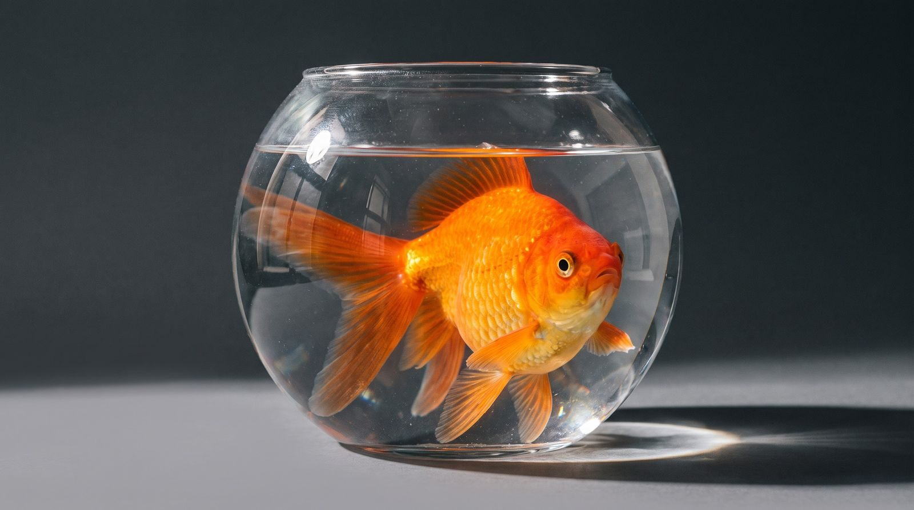
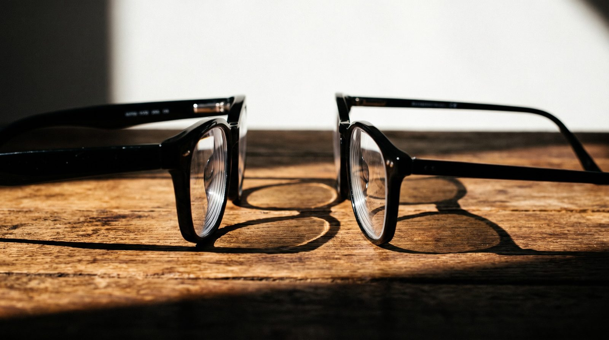

甲班・自然複習・10/16
放大鏡偵探
前兩節做過的實驗，今天來破案！
按「下一步」開始 →
偵探回憶
還記得嗎？我們做過這些實驗
👉 請同學說說看：那時候看到了什麼？
證據 1・鏡片的形狀
從旁邊看，鏡片有兩種
凸透鏡
凹透鏡
證據 2・先猜猜看
放大鏡、一滴水放在字上，字會？
舉手投票：A 還是 B？
變大！
放大鏡、一滴水都是中間厚：字看起來變大。
證據 3・陽光聚成一點
為什麼樹葉會冒煙？
光全部聚到「焦點」：最亮、最燙！⚠ 不能對著太陽、不能對著人
證據 4・先猜猜看
放大鏡把窗邊的盆栽，投到白紙上——
倒過來！
證據 5・中間薄的鏡片
從門上的貓眼看出去
整條走廊都看得到，
可是東西都變小了
中間薄＝凹透鏡
快問快答
三題，看誰最快！

從旁邊看圓魚缸金魚看起來？
變大

近視眼鏡是哪一種鏡片？
中間薄
下一步・動手做
拿出放大鏡，開始尋寶！
1拿一支放大鏡
2找尋寶單上小小的東西
3找到了，在 ☐ 打勾
⚠ 放大鏡不對著太陽、不對著別人的眼睛
偵探筆記
破案！今天的三個證據
🪴放大鏡拿遠一點：景色倒過來
破案！